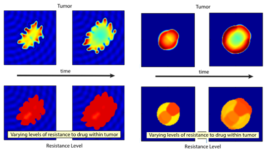
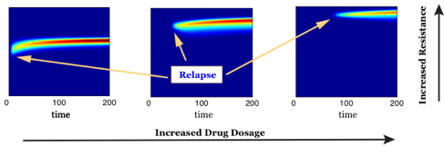
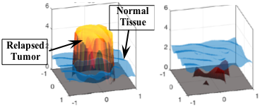
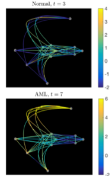
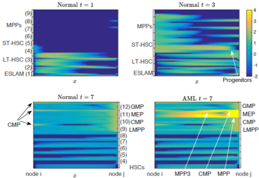
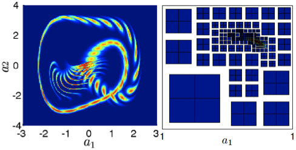
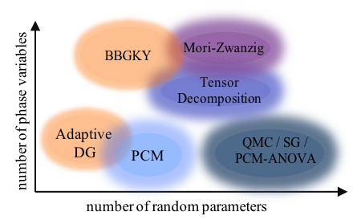
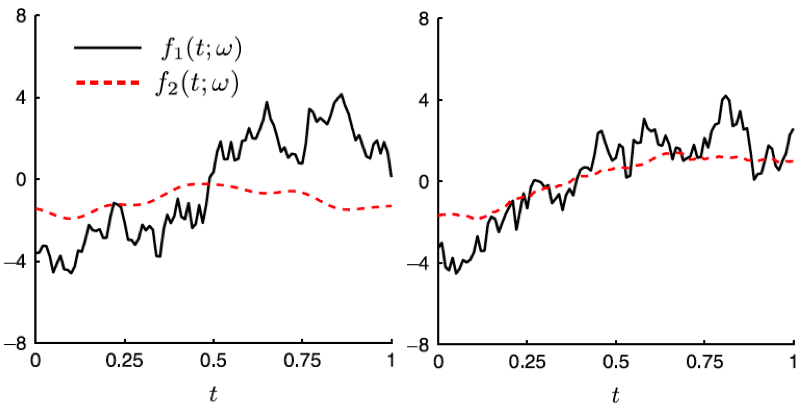

Research Interests
Mathematical and Computational Biology, Cancer modeling
Stochastic modeling and Uncertainty Quantification
Computational methods for high-dimensional stochastic systems
Multi-scale modeling and simulations
Numerical PDE and High-performance computing
1. Mathematical and Computational Biology
1-1. Modeling Dynamics of Drug Resistance
and Spatial Heterogeneity in Tumor
Drug resistance is a major challenge to successful cancer treatments. For a better understanding of chemotherapy-induced selection of drug-resistant traits during tumor growth, we develop a mathematical model to study the dynamics of drug resistance in solid tumor [7,9].
Our model follows the dynamics of the tumor, assuming that the cancer cell population depends on a phenotype variable that corresponds to the resistance level to a cytotoxic drug.
The model successfully integrates the phenotype structured approach with an asymmetric tumor growth model in space.
Through analysis and simulations, we study the impact of spatial and phenotypic heterogeneity on the tumor growth under chemotherapy.
We demonstrate that heterogeneous cancer cells may emerge due to the selection dynamics of the environment, and our model predicts multiple resistant traits emerging at different locations within the tumor.
Moreover, a higher dosage of the cytotoxic drug may delay a relapse, yet, when this happens, a more resistant trait emerges.
An estimation of expansion rate of the tumor boundary and the time of relapse are
provided as well.

Figure. Various growth patterns predicted
by the model (top) and the corresponding
level of mean resistant trait (bottom) [9].
1-2. Study of Combination Therapy in Cancer Treatments
Designing effective anti-cancer strategies can be enhanced by
mathematical models and techniques. We model and study
potential combination and scheduling of multiple drugs with different
mechanisms to overcome drug resistance.
In the following series of work, we focus on developing combination therapies while taking account of the drug-resistant population into the model.
We first study the effectiveness of a combination of cytotoxic and cytostatic drugs when the cancer cells consist of heterogeneous cell population in resistance to chemotherapy [7].
In particular, by aiming at minimizing the growth rate of the most resistant trait, we show that the resistant cancer cells can be eliminated by the proposed combination of treatment.
Moreover, an adaptive therapy can be administered by considering the maximal fitness traits. In addition, we study a combination of cytotoxic and targeted drugs while considering resistance to both drugs [12].
We demonstrate the effectiveness of targeted drugs when cell
competition between cancer cells and normal tissue cells are
aggressive, and propose alternating scheduling based on the ratio of
resistant cells to each drug.


1-3. Continuum Cell State models from High-dimensional Gene Expression Data
Single-cell RNA sequencing data (scRNA-seq) data provides the gene expression level that is in the dimensionality of O(10
5) per each individual cell.
By applying dimension reduction techniques,
the data reveals a continuum cell state, that
changes the classical view of cell biology assuming discrete cell states.
We first study whether the assumption of continuum cell states yields distinct results from discrete cell state
models,
particularly in the context of anti-cancer drug resistance [11],
by comparing the binary cell state model of drug-sensitive and drug-resistant to the continuum resistance model.
Assuming continuous state may result in different dynamics when compared with the predictions of classical discrete models, and we classify the continuum models when they yield different dynamical patterns in the emerging heterogeneity in response to chemotherapy.
Further,
we develop a continuum cell state model using the gene data of hematopoietic stem cells (HSC) [10]. Diffusion mapping is applied to the data to reduce dimensionality.
The trajectories of cell states in the continuum differentiation space
are abstracted
in the first few principal diffusion component space
as a graph, then modeled as directed and random movement on the graph with PDEs.
We simulate normal and abnormal differentiation processes
(e.g. acute myeloid leukemia (AML) progression), and predict the emergence of cells in novel intermediate states of differentiation, that is consistent with
the experiments of AML mouse mode.


2. Uncertainty Quantification
2-1. Modeling and Simulation of Stochastic System with Colored Noise
Evolution equations of the response-excitation probability density
function (PDF) generalize the existing kinetic equations and enable us
to compute the stochastic solution of systems driven by random
excitations including colored noise [1]. We develop an efficient
high-order numerical method for this system, involving a
non-conforming adaptive discontinuous Galerkin (DG) method in the
response space and the probabilistic collocation method (PCM) in the
excitation variables [2]. In addition to showing that the system
agrees with the effective Fokker-Planck equation in the white noise
limit, we study chaotic and bi-stable oscillator problems and Burgers
equation subjected to colored noise [2,4]. The algorithm captures
stiff and localized solutions accurately.

Figure. Time evolution of the response
PDF of Duffing oscillator and a snapshot
of adaptive grid.
2-2. Efficient Numerical methods for High-dimensional Stochastic Systems
High-dimensionality is one of the major challenges in uncertainty quantification. In particular, kinetic models and simulations of realistic physical systems are generally more expensive than moment-based methods, while they provide
the PDF that contains complete statistical structure of the stochastic dynamics. Thus, we develop several algorithms based on
well-known approximations for high-dimensional functions, namely, the sparse grid (SG) approximation, high-dimensional model representation (ANOVA) and tensor decomposition [6].
The ANOVA expansion superimposes the solution regarding the low-order interaction, while the tensor decomposition, approximates the solution as a series of low-dimensional functional products.
The algorithms based on
these methods reduce the computation into a series of lower-dimensional operations. In addition to high-dimensional kinetic simulation, we develop an adaptive reduced basis collocation
method to efficiently solve high-dimensional parameterized stochastic PDEs [8]. The method employs two stages of adaptive procedure based on PCM and ANOVA decomposition by exploring the low rank structure of the solution in the stochastic domain.
The method enables efficient simulation of anisotropic and irregular stochastic systems.

Figure. Range of applicable numerical methods for the kinetic
equation with random parameters in terms of dimensionality
in the phase variables and the number of parameters.
2-3. Representation of Multiple Correlated Stochastic Processes
The Karhunen-Loeve (KL) expansion is an effective mathematical representation of a non-stationary stochastic process used in stochastic simulations.
However, the representation is limited to a single process
or ensembles of statistically independent processes.
We extend the KL expansion to model multiple correlated
non-stationary stochastic processes focused on the mutual correlations [3].
Two methods, muKL and mCKL, have been developed, where
the former is optimal in mean square error,
and the latter requires less computational cost.
The convergence of the expansion is proven analytically and demonstrated in numerical examples involving Gaussian processes as well as fractional Brownian motions. The proposed methods can be readily employed in stochastic simulation involving multi-correlated processes and mutually correlated data-driven problems for dimension reduction. Moreover, we develop local KL expansion to accompany domain decomposition methods in the physical space [5].
The algorithm decomposes the series expansion to local sub-domains while preserving the global statistical structure.

Figure. Sample trajectories of two stochastic processes
generated by mKL method that are independent (left)
and strongly correlated (right).
Check out some of my talks!
Check out some of my talks! ->
SIAM-UQ12,
SIAM-UQ14
Check out some of my posters! ->
IMO16,
IMA18